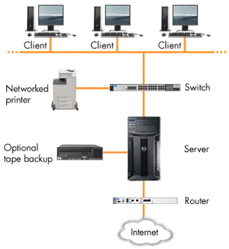

L'histoire du web: Grands Evènements, Dates & Définitions Importantes
Auteur: Thierno Diallo
Temps de lecture: 10 min
Catégorie: Informatique et Histoire

Le World Wide Web (WEB)
Définitions
Le World Wide Web est un système hypertexte
public fonctionnant sur Internet. Le Web permet de consulter, avec
un navigateur, des pages accessibles sur des sites. L’image de la
toile d’araignée vient des hyperliens qui lient les pages web entre
elles.
Arpanet (de l'anglais Advanced Research Projects
Agency Network) est l'acronyme du premier réseau à transfert de
paquets de données conçu aux États-Unis par la
Defense Advanced Research Projects Agency
(DARPA). Ce concept de commutation de paquets (packet switching)
deviendra la base du transfert de données sur Internet.
Un navigateur internet est un logiciel qui est une interface graphique
entre un être humain et internet : il permet de consulter des sites web. Il existe de de
nombreux navigateurs web (Mozilla Firefox, Google Chrome, Internet Explorer, Safari,
Opera etc…) pour les différents
systèmes d’exploitation
(Windows, Linux, Mac OS, iOS,
Android), sur différents supports numériques (ordinateurs, smartphones, tablettes, consoles
de jeu etc…).
Un moteur de recherche est un logiciel qui permet de trouver l’information recherchée
en ligne à l’aide de mots ou de phrases clés.
Les moteurs de recherche peuvent générer des résultats rapidement, malgré la présence
de millions de sites en ligne. Cela est possible, car les moteurs balaient l’Internet
continuellement et indexent chaque page trouvée.
Lorsqu’un utilisateur entre un terme de recherche, le moteur de recherche
examine les titres de page de sites, les contenus et les mots clés indexés, puis utilise
des algorithmes (opérations étape par étape) pour produire une liste de sites en plaçant
les sites les plus pertinents en tête. Les entreprises utilisent le référencement naturel
(SEO) pour aider les moteurs de recherche à désigner leurs sites Web comme très pertinents
pour des recherches particulières. Les moteurs de recherche les plus populaires incluent
Google, Bing et Yahoo.
Une URL, couramment appelée adresse web, est une chaîne de caractères uniforme qui permet
d'identifier une ressource du World Wide Web par son emplacement et de préciser le
protocole internet pour la récupérer. Elle peut localiser divers formats de données :
document HTML, image, son..
Historique du web
Le Web a une longue histoire derrière lui. Faisons un historique
express :
-
1969 : création de l’ancêtre d’Internet, appelé alors
ARPAnet. C’est un réseau militaire qui se veut décentralisé
(il n’a pas de lieu de commande central).
Le réseau a ensuite évolué pour devenir un lieu d’échange universitaire
avant de devenir progressivement grand public sous le nom d’Internet.
-
1972 : apparition des e-mails pour échanger des messages.
-
1991 : apparition du Web, pour afficher des pages d’information.
Comme vous le voyez, Internet est apparu bien avant le Web !
Il était possible de s’échanger des e-mails avant que l’on puisse
consulter des pages web.
L’inventeur du Web ? Il s’agit de Tim Berners-Lee,
un Britannique. Il est le premier à présenter un concept
de "page web" avec des "liens hypertextes" qui permettent de naviguer
d’une page à une autre. Il est aussi à l’origine des bases
du langage HTML que l’on utilise toujours aujourd’hui pour concevoir des
pages web.
 Tim Berner-Lee, Inventeur du Web
Tim Berner-Lee, Inventeur du Web
Tim Berners-Lee était en 1991 chercheur au CERN (un important centre de recherche
scientifique à la frontière franco-suisse). C’est là qu’il a eu l’idée du Web.
Il a par la suite créé un organisme, le W3C (World Wide Web Consortium
est un organisme de standardisation à but non lucratif, fondé en octobre 1994 chargé de
promouvoir la compatibilité des technologies du World Wide Web telles que HTML5, HTML,
XHTML, XML, RDF, SPARQL, CSS, XSL, PNG, SVG, MathML et SOAP.) qui a pris
le relais pour faire évoluer les technologies du web (HTML, CSS, PNG, XML et autres
noms barbares).
Il faut ici bien retenir qu’Internet est l’infrastructure qui relie les réseaux informatiques
entre eux, tandis que le World Wide Web est un système d’organisation de l’information accessible
via Internet.
Les Serveurs
En deux mots, un serveur est généralement un ordinateur plus puissant que votre
ordinateur de bureau habituel. Il est spécialement conçu pour fournir des informations
et des logiciels à d'autres ordinateurs qui lui sont reliés via un réseau. Les serveurs
sont dotés de composants matériels qui gèrent la mise en réseau par câble Ethernet ou
sans fil, généralement via un routeur.
Capables de traiter des charges de travail plus importantes et d'exécuter davantage
d'applications, les serveurs tirent parti de leurs composants matériels spécifiques pour
augmenter la productivité et réduire les temps d'inactivité.
Les serveurs offrent également des outils de gestion à distance qui permettent à un technicien
informatique de vérifier l'utilisation et de diagnostiquer les problèmes depuis un autre site.
Vous pouvez également utiliser ces outils pour exécuter des tâches de maintenance régulière, telles
que l'ajout de nouveaux utilisateurs ou la modification de mots de passes.

Réseau basé sur un serveur
Communication client–serveur
Le protocole ou environnement client–serveur désigne un mode de transaction entre plusieurs
programmes ou processus : l'un, qualifié de client, envoie des requêtes ; l'autre,
qualifié de serveur, attend les requêtes des clients et y répond. Le serveur offre ici un
service au client.
Les Protocoles
En deux mots, un serveur est généralement un ordinateur plus puissant que votre
ordinateur de bureau habituel. Il est spécialement conçu pour fournir des informations
et des logiciels à d'autres ordinateurs qui lui sont reliés via un réseau. Les serveurs
sont dotés de composants matériels qui gèrent la mise en réseau par câble Ethernet ou
sans fil, généralement via un routeur.
HTTP est un protocole qui permet de récupérer des ressources telles que des documents HTML.
Il est à la base de tout échange de données sur le Web. C'est un protocole de type client-serveur,
ce qui signifie que les requêtes sont initiées par le destinataire (qui est généralement un
navigateur web). Un document complet est construit à partir de différents sous-documents
qui sont récupérés, par exemple du texte, des descriptions de mise en page, des images, des
vidéos, des scripts et bien plus.
 Constitution d'une page web
Constitution d'une page web
Méthode POST
POST est la méthode HTTP conçue pour envoyer des charges de données à un serveur à
partir d'une ressource spécifiée. La plupart des formulaires HTML courants sur le
Web fonctionnent à l'aide de cette méthode de requête. Il transmet généralement
des charges de données relativement faibles à un récepteur. Cette méthode permet
d'envoyer des données sous forme de package dans une communication séparée avec le
script de traitement. Cela signifie que les données envoyées via la méthode POST ne
seront pas visibles dans l'URL, car les paramètres ne sont pas envoyés avec l'URI.
Le format d'un HTTP POST doit avoir des en-têtes HTTP, suivis d'une ligne vide, suivis
du corps de la requête. La demande POST peut être utilisée pour soumettre un formulaire
Web ou télécharger un fichier, mais il est essentiel de s'assurer que l'application
réceptrice correspond au format utilisé. L'en-tête Content-Type indique le type de corps
dans la requête POST.
Méthode GET
La méthode Get du protocole de transfert hypertexte (HTTP) est principalement utilisée
côté client (navigateur) pour envoyer une requête à un serveur spécifié afin d'obtenir
certaines données ou ressources. En utilisant cette méthode, le serveur devrait seulement
nous laisser recevoir les données et ne pas changer leur état. Par conséquent, il ne sert
qu'à visualiser quelque chose et non à le modifier. La méthode Get est l'une des méthodes
HTTP les plus utilisées. Le paramètre de requête de la méthode get est ajouté à l'URL. Get
request est préférable pour les données qui n'ont pas besoin d'être sécurisées (c'est-à-dire
les données qui ne contiennent pas d'images ou de documents Word).
Protocole Mail
Simple Mail Transfer Protocol est un protocole de communication utilisé pour transférer
le courrier électronique (courriel) vers les serveurs de messagerie électronique.
SMTP est un protocole assez simple (comme son nom l'indique). On commence par spécifier
l'expéditeur du message, puis le ou les destinataires d'un message, puis, en général après
avoir vérifié leur existence, le corps du message est transféré. Il est possible de tester
un serveur SMTP en utilisant la commande telnet sur le port 25 d'un serveur distant.
Le SMTP commence à être largement utilisé au début des années 1980. Il est alors un complément
à l'UUCP, celui-ci étant plus adapté pour le transfert de courriers électroniques entre des
machines dont l'interconnexion est intermittente. Le SMTP, de son côté, fonctionne mieux lorsque
les machines qui envoient et reçoivent les messages sont interconnectées en permanence.
 Simple Mail Transfer Protocol (SMTP)
Simple Mail Transfer Protocol (SMTP)
FTP (File Transfer Protocol)
FTP (File Transfer Protocol) est un protocole réseau pour la transmission de fichiers entre ordinateurs
via des connexions TCP/IP (Transmission Control Protocol/Internet Protocol). Au sein de la suite TCP/IP,
FTP est considéré comme un protocole de couche application.
Dans une transaction FTP, l'ordinateur de l'utilisateur final est généralement appelé l'hôte local.
Le deuxième ordinateur impliqué dans FTP est un hôte distant, qui est généralement un serveur. Les
deux ordinateurs doivent être connectés via un réseau et configurés correctement pour transférer des
fichiers via FTP. Les serveurs doivent être configurés pour exécuter des services FTP et le client doit
disposer d'un logiciel FTP installé pour accéder à ces services.
Bien que de nombreux transferts de fichiers puissent être effectués à l'aide du protocole HTTP (Hypertext
Transfer Protocol) - un autre protocole de la suite TCP/IP - FTP est encore couramment utilisé pour transférer
des fichiers en arrière-plan pour d'autres applications, telles que les services bancaires. Il est également
parfois utilisé pour télécharger de nouvelles applications via des navigateurs Web.
HTTPS: Quand et Pourquoi ?
Le HTTP est indispensable au bon déroulement de la navigation sur internet,
permettant aux internautes d'échanger avec le serveur du site visité pour recevoir
des informations (afficher une page, lancer un téléchargement, ...) ou en envoyer
(coordonnées via formulaire de contact, données de carte bancaire, ...). Le problème
avec le protocole HTTP c'est qu'il ne crypte pas ces échanges d'informations : les
discussions entre serveur et navigateur sont diffusées en clair, permettant à tout
un chacun de pouvoir les intercepter et les lire sans difficulté.
Cela représente un énorme danger dans le cas des sites e-commerce, où des données bancaires
transitent, mais pas seulement ! Contrairement à ce que l'on pense, les sites internet
vitrines sont eux aussi soumis à des risques. Par exemple, au moment de la requête
navigateur/serveur de l'internaute, une personne mal intentionnée peut remplacer la page
demandée par une toute autre page au contenu douteux.C'est principalement pour combler cette
faille de sécurité qu'un protocole beaucoup plus sécuritaire a été créé : le HTTPS.
Le HTTPS (« HyperText Transfer Protocol Secure ») est aussi un protocole permettant
au navigateur et au serveur d'échanger des informations. Mais, contrairement au HTTP,
le HTTPS va permettre de crypter ces échanges, rendant les informations illisibles si
elles venaient à être interceptées par la mauvaise personne.
Représentation de HTTPS